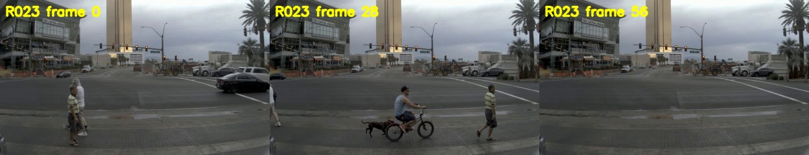
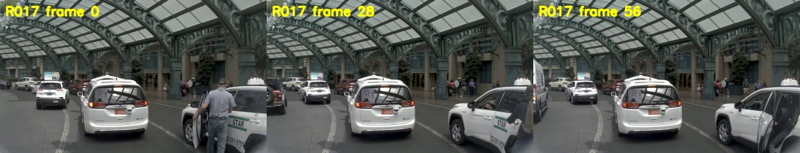
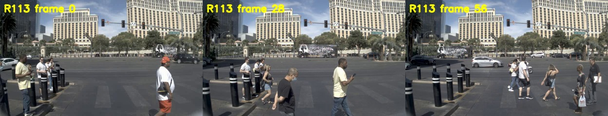
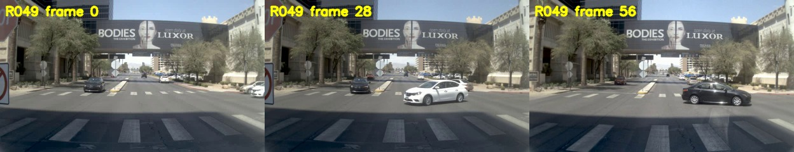
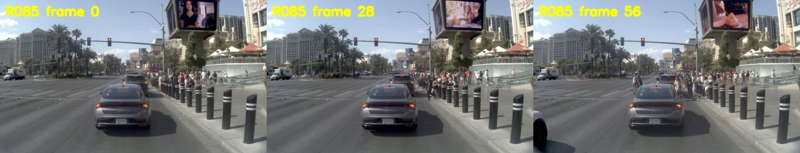
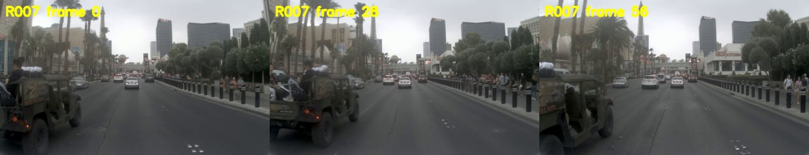
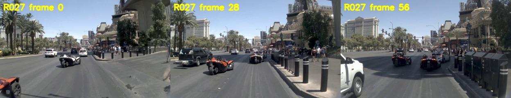

R023event_core_candidatekeep_pending_human_review

一个男人骑着自行车穿过路口，一只狗在自行车旁跟着他。
骑车人与狗的伴随关系是可描述事件；狗不绑定3D track，避免从文本猜框。
打开带3D框时间轴
- 主对象
- bicycle · 4a6b1f43ff5252ec · slot 2
- 复核
- 确认狗在完整视频中始终与骑车人同行；确认主track是自行车而不是旁边行人
R017event_core_candidatekeep_pending_human_review

一个背着背包的人从出租车旁上车，进入车内。
视频支持人员从出租车旁进入车内，动作有明确时间变化；机器主绑定错误。；机器主绑定冲突
打开带3D框时间轴
- 主对象
- pedestrian · 50b60e2974cb5b7d · slot 3
- 复核
- 确认主track是上车行人；确认上车方向和动作顺序
R113event_candidate_needs_sentence_reviewkeep_pending_human_review

一名行人穿过斑马线，经过路边等候的其他行人。
带3D框时间轴确认主框跟随灰衣行人穿过斑马线；仍需人工确认跑步还是普通行走，并修正机器主绑定冲突。；机器主绑定冲突
打开带3D框时间轴
- 主对象
- pedestrian · ee315a1f414c523d · slot 6
- 复核
- 在带框时间轴中确认主track对应哪一名行人；确认是跑步还是普通行走
R049event_core_candidatekeep_pending_human_review

一辆黑色轿车在路口等待，白色轿车横穿前方后，黑车再通过路口。
黑车等待、白车先横穿、黑车随后通过，存在可见的多车时序关系；机器主绑定需人工确认。；机器主绑定冲突
打开带3D框时间轴
- 主对象
- vehicle · 122be85c5e9458e3 · slot 1
- 复核
- 确认黑车是主track；确认是否确实发生左转，不用语言补充不可见因果
R085event_candidate_needs_sentence_reviewkeep_pending_human_review

一名行人从路边人群中走出，朝黑色轿车后方走去。
带3D框时间轴确认目标行人从人群方向走到黑色轿车后方；是否发生更具体交互仍不能从当前片段确认。
打开带3D框时间轴
- 主对象
- pedestrian · eebeec6e35de5621 · slot 3
- 复核
- 确认主track在全程是否可见；确认其是否真的朝车辆后方行走
R007event_core_candidatekeep_pending_human_review

一辆后部敞开的吉普车载着乘客和物品沿街行驶。
后部敞开的车辆及其乘员/载物是有辨识度的构型，不是单纯描述车辆直行。
打开带3D框时间轴
- 主对象
- vehicle · ac5975deff6454db · slot 0
- 复核
- 确认后部可见的是乘客和物品，避免加入车顶等未证实细节
R025event_core_candidatekeep_pending_human_review
一辆白色三轮车减速时，另一辆橙色三轮车从其左后方驶近。
罕见三轮车辆与另一辆三轮车存在接近和减速关系，具有对象交互信息；NPZ类别桶为bicycle，需人工确认语义是否接受。
打开带3D框时间轴
- 主对象
- bicycle · 0991b72ae68e545c · slot 1
- 复核
- 确认白色三轮车是主track；确认bicycle类别桶与三轮车文本是否需要保留；与R027保持同一来源场景划分
R027event_core_candidatekeep_pending_human_review

一辆橙色三轮车从另一辆三轮车左后方驶近，随后两车沿相邻车道前进。
同场景另一辆橙色三轮车的接近关系可作为互补对象事件；NPZ类别桶为bicycle，需人工确认语义是否接受。
打开带3D框时间轴
- 主对象
- bicycle · efd62aa2993752b2 · slot 0
- 复核
- 确认橙色三轮车是主track；确认bicycle类别桶与三轮车文本是否需要保留；与R025保持同一来源场景划分
R035motion_supplementkeep_pending_human_review
一辆白色出租车从自车左侧驶到前方，并向左调整方向后驶远。
起步和转向可用于运动补充池，但缺少更丰富的交互或语义事件。
打开带3D框时间轴
- 主对象
- vehicle · d6013e6e89f15953 · slot 0
- 复核
- 确认转向描述与3D轨迹方向一致
R010motion_supplementkeep_pending_human_review
一辆灰色商务车短暂停留后起步，向前驶去。
从近乎静止到起步是状态变化，但仍属于低信息量运动补充。
打开带3D框时间轴
- 主对象
- vehicle · eb39a0eca75e5281 · slot 0
- 复核
- 确认中段确实发生起步而非相机运动造成的假象
R029motion_supplementkeep_pending_human_review
一辆黑色SUV驶入路口后向右转，沿侧方道路驶去。
明确右转，但没有独立的复杂交互；不放入事件核心池。
打开带3D框时间轴
- 主对象
- vehicle · a50a0b63748054e1 · slot 0
- 复核
- 确认右转方向
R045motion_supplementkeep_pending_human_review
一辆银色轿车从道路右侧起步，向右转入前方车道后驶远。
起步后右转，保留作轨迹运动补充，不作为高信息事件。
打开带3D框时间轴
- 主对象
- vehicle · 6087570ad7af55ff · slot 1
- 复核
- 确认起步和右转均在目标可见阶段发生
R062motion_supplementkeep_pending_human_review
一辆银灰色轿车驶向路口，随后向右转入侧方道路。
明确右转进入侧路，但语义上仍接近普通交通运动。
打开带3D框时间轴
- 主对象
- vehicle · ebdac910291655aa · slot 7
- 复核
- 确认目标track和右转方向
R077motion_supplementkeep_pending_human_review
一名骑手进入路口后向右转，驶向横向道路。
带3D框时间轴确认摩托车在关键帧可见；仅保留为右转运动补充，不提升为事件核心。
打开带3D框时间轴
- 主对象
- bicycle · 154be8f48a265063 · slot 9
- 复核
- 先用带3D框时间轴确认骑手是否在目标视频中可见
R078motion_supplementkeep_pending_human_review
一名骑手穿过路口后向右转，驶向另一条道路。
带3D框时间轴确认摩托车在关键帧可见；仅保留为右转运动补充，不提升为事件核心。
打开带3D框时间轴
- 主对象
- bicycle · cf5d75118c5551b7 · slot 7
- 复核
- 先用带3D框时间轴确认骑手是否在目标视频中可见
R082motion_supplementkeep_pending_human_review
一辆白色轿车驶到路口后向右转入侧方道路，其他车辆继续直行。
存在右转和直行车流背景，但不能从此句推断避让或因果。
打开带3D框时间轴
- 主对象
- vehicle · 11c4815880d45d2a · slot 3
- 复核
- 确认不要把同时发生写成避让原因
R100motion_supplementkeep_pending_human_review
一辆深色轿车从前方车道向左转弯，驶入左侧道路。
明确左转，但缺少额外对象交互，作为运动补充。
打开带3D框时间轴
- 主对象
- vehicle · ec3eeda811725845 · slot 10
- 复核
- 确认左转方向
R102motion_supplementkeep_pending_human_review
一辆深色轿车沿最右侧车道驶入路口，随后向右转弯离开直行车流。
明确右转离开直行车流，但仍属于常规轨迹控制样本。
打开带3D框时间轴
- 主对象
- vehicle · fd544ad770b45ea8 · slot 5
- 复核
- 确认主track和转向方向